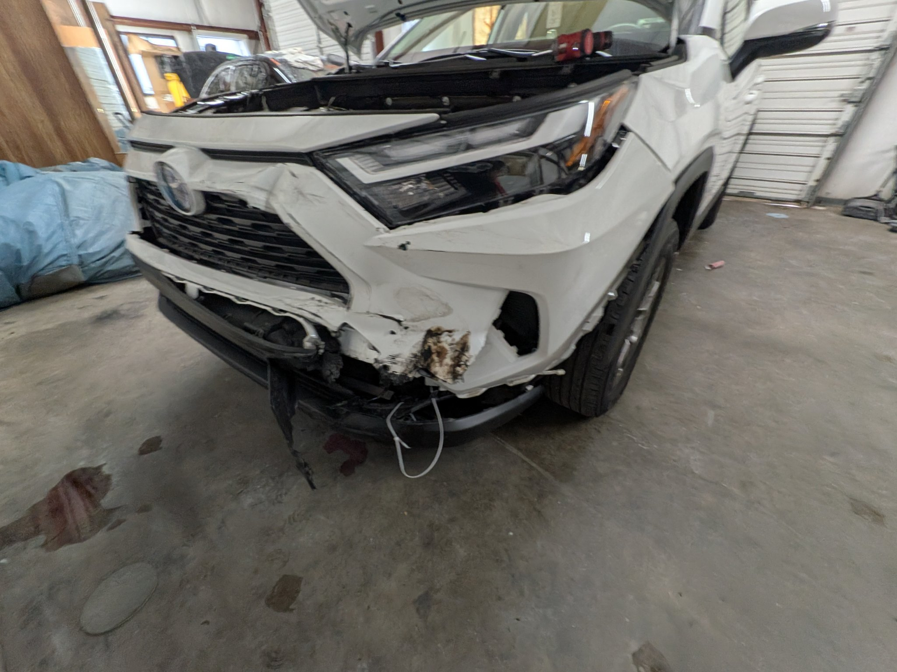

Hit a Deer in South Carolina? Here's What to Do Next

October through December is peak deer season in Upstate South Carolina — and the stretch of roads around Taylors, Greer, and northern Greenville County sees plenty of them. If a deer runs out in front of you, here's what to do.
Don't swerve
This is the big one. Swerving to miss a deer causes more serious crashes — rollovers, head-on collisions, trees — than the deer ever would. Brake firmly in a straight line. It's counterintuitive, but it's what every safety expert teaches.
At the roadside
- Pull over safely and turn on your hazards.
- Call 911 — a deer strike gets a police report, which your insurance will want.
- Don't approach the deer. A wounded animal is dangerous.
- Take photos of the damage, the scene, and the deer if it's safe.
- Check whether the car is drivable: leaking fluids, broken headlights, a hood that won't latch, or steam from the radiator mean call a tow — don't risk it.
Your insurance probably covers it
Deer strikes fall under comprehensive coverage, not collision — which usually means a lower deductible for you. Call your insurer, give them the police report number, and start the claim. And remember: you choose the repair shop, not the insurance company.
What deer damage usually involves
Deer hits love the front end: bumper covers, grilles, headlights, hoods, fenders, and radiators/condensers behind them. A strike that "doesn't look too bad" often hides a cracked radiator support or a bent hood latch. Every deer job we take in goes on the lift for a full inspection before we quote — because the hidden damage is where the real cost lives.
We've repaired dozens of deer strikes from around the Upstate. Most are back on the road within a week, and we handle the insurance paperwork with you. If you tagged one this season, call us at (864) 475-1057 for a free estimate.
Need this fixed? Get a free estimate.
Bring your car by the shop or send us photos — we'll tell you exactly what it'll take.
Call (864) 475-1057221 West Main Street, Taylors, SC · Mon–Fri 9–5, Sat 9–12